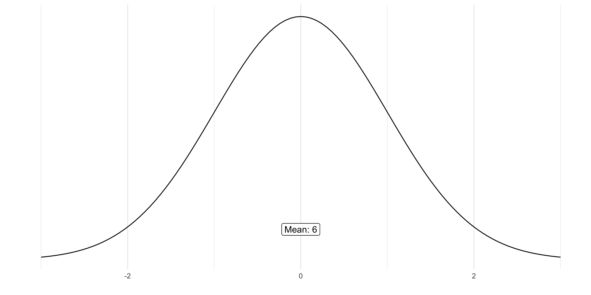
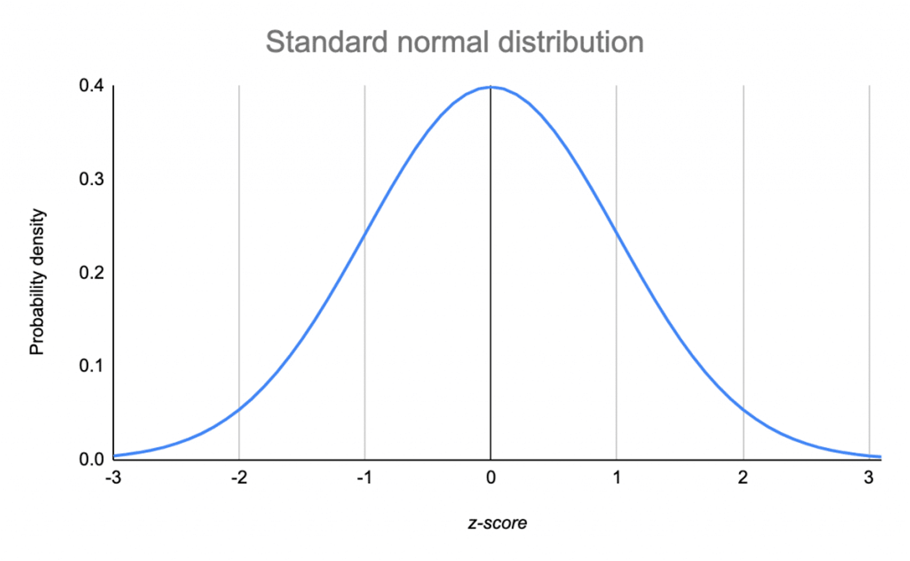
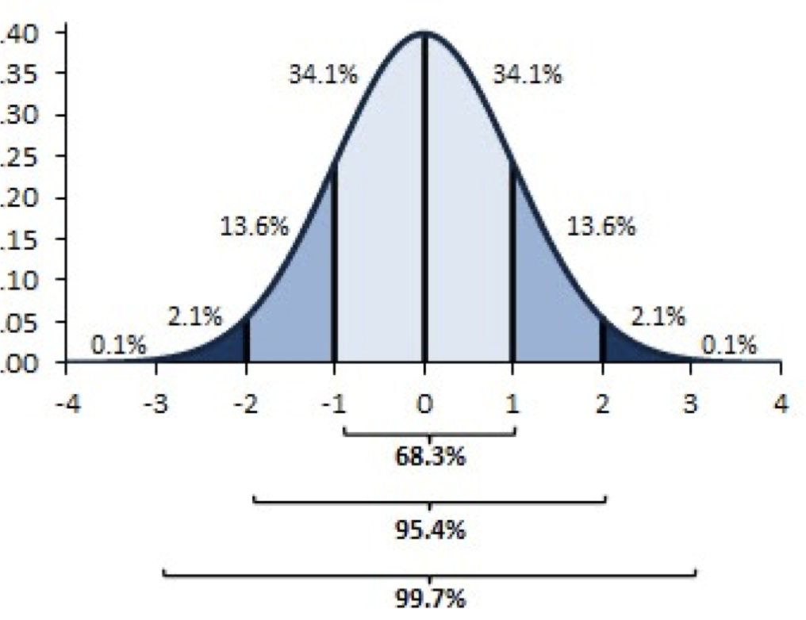
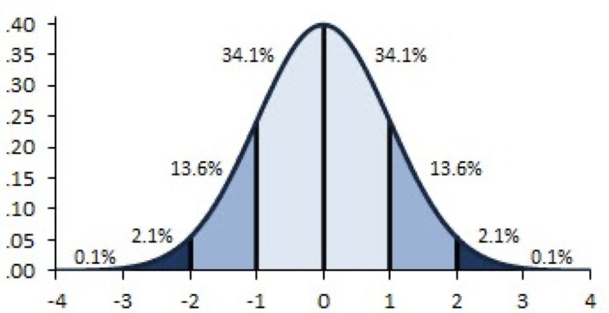
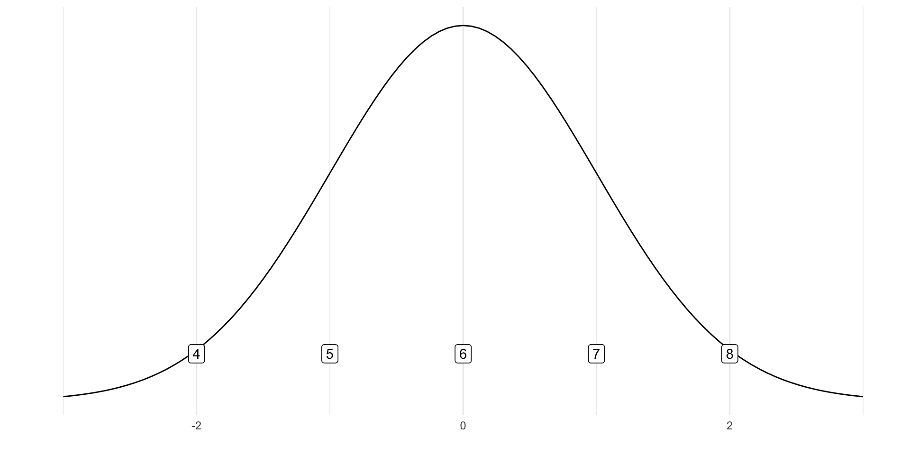
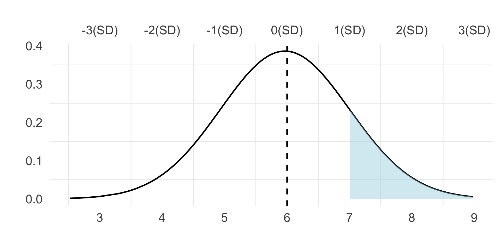

Standard Normal Distribution
Lecture 5
Standard Normal Distribution
What do we know about normal distributions?

Standard Normal Distribution
Properties and Principles
The 4 properties of a standard normal distribution are:
They are shaped like a bell (“bell curve”).
They are symmetric.
They are unimodal.
The mean = median = mode.
Standard Deviation
Standard deviation is in the scale of the variable (x).
- A standard deviation of 1 means a distance of 1 on the scale used to measure the variable.
Standard Normal Distribution
Example 1
Jonas scores a 98 on the exam. The average grade on the exam was 97 with a standard deviation of 1.
- Find Jonas’ score on the normal distribution.
Standard Normal Distribution
Where do most scores fall in relation to the mean?
Most scores fall within one standard deviation of the mean.
“Within one standard deviation” means +1 as well as -1 standard deviation.
Standard Normal Distribution
Percentages and Proportions
68.3% of the data will fall within 1 SD of the mean.
95.4% of the data will fall within 2 SD of the mean.
99.7% of the data will fall within 3 SD of the mean.

Standard Normal Distribution
Example 1
Students’ ratings of the Netflix Original Dark (range = 1- 10) form a normal distribution with m = 6 and s = 1.
What percentage of Students rate it a 7 or higher?
What percentage of Students rate it at least a 4?
What percentage of Students rate it an 8 or lower?
Standard Normal Distribution
Where should we put the mean?

Standard Normal Distribution
Where should we put the mean?
Standard Normal Distribution
Mean: 6 | Standard Deviation: 1

Standard Normal Distribution
Example 1:
Students’ ratings of the Netflix Original Dark form a normal distribution with m = 6 and s = 1.
What percentage of Students rate the Netflix Original Dark a 7 or higher?
- 15.8%
Standard Normal Distribution
Example 1:
Students’ ratings of the Netflix Original Dark form a normal distribution with m = 6 and s = 1.
What percentage of Students rate the Netflix Original Dark at least a 4?
- 2.2%
Standard Normal Distribution
Example 1:
Students’ ratings of the Netflix Original Dark form a normal distribution with m = 6 and s = 1.
What percentage of Students rate the Netflix Original Dark an 8 or lower?
- 97.6%
Z-scores
What does it do?
A z-score tells you, in standard deviation units how far the x-value is from the mean.
Z-scores are better than using raw SD,
When the SD is a decimal, it is hard to find the exact point under the standard normal curve.
Z-scores
Rule of Thumb
- The distance from the mean to the 1 on this standard normal curve is equal to the SD.
Z-scores
Rule of Thumb
- The distance from the mean to the 1 on this standard normal curve is equal to z=1.
Z-scores:
Find: Z = 1 | Z = -2 | Z = 0.5
Z-scores]
What do they do!
Z-scores re-express the original data points (the x’s) in a way that intuitively lets us know:
How close the
xis to the mean (AKA how much this particular participant is like the average person in the sample)Where it falls in the dispersion of the distribution (AKA how different this particular participant is from the majority of people in the sample)
Calculating
Z-scores
Subtract the mean from each X value.
Divide by the standard deviation.
Tip
\[ z = \frac{x-\bar{x}}{s} \]
Z-scores
Z-Scores are calculated by
Centering the X values on the mean: When we center the mean (AKA mean-centering), we set the mean to 0.
Dividing by the standard deviation
When we divide by the SD, the space from the mean is expressed in standard deviations.
Z-scores
A Familiar Face: \(\bar{x} = 20\)
| x | x-xbar | (x-xbar)^2 |
|---|---|---|
| 10 | -10 | 100 |
| 10 | -10 | 100 |
| 20 | 0 | 0 |
| 30 | 10 | 100 |
| 30 | 10 | 100 |
Z-scores
Formula in Action
Tip
\[z =\frac{x-\bar{x}}{s} = \frac{20-10}{s}=\frac{-10}{s}\]
Tip
\[s^2 = \frac{\sum(x-\bar{x}^2)}{n-1} = \frac{400}{4} = 100 = \sqrt{100} = s\]
Z-scores
| x | x-xbar | (x-xbar)^2 | z |
|---|---|---|---|
| 10 | -10 | 100 | -1 |
| 10 | -10 | 100 | -1 |
| 20 | 0 | 0 | 0 |
| 30 | 10 | 100 | 1 |
| 30 | 10 | 100 | 1 |
Z-scores
We made the mean = 0: When you mean-center a distribution, you shift it along the number line.
We made the SD = 1: When you divide a distribution by the SD, you shrink the distribution down.
BUT: The shape of the distribution remains the same.
Z-scores
Shift distribution along the number line.
Shrink distribution down.
The shape of the distribution remains the same.

Z-Scores
Why Do We Care?
A z-score tells me where my score falls in SD units.
I can then look at this standard normal curve, and estimate what percentage of people did better or worse than me.
Z-Scores
Why Do We Care?
The mean score for Exam 1 was a 92 with a standard deviation of 3.
Esmeralda scored an 86.
What percent of the class scored better than Esmeralda?
Z-Scores
Why Do We Care?
\(z=\frac{x-\bar{x}}{s} = \frac{86-92}{3} = -2\)
- 98% of the class did better than Esmeralda.
Z-Scores
The mean score for Exam 1 was a 92 with a standard deviation of 3.
Jonas scored a 95.
- What percent of the class scored better than Jonas?
\[ z = \frac{95-92}{3} = 1 \]
- 16% scored higher than Jonas.